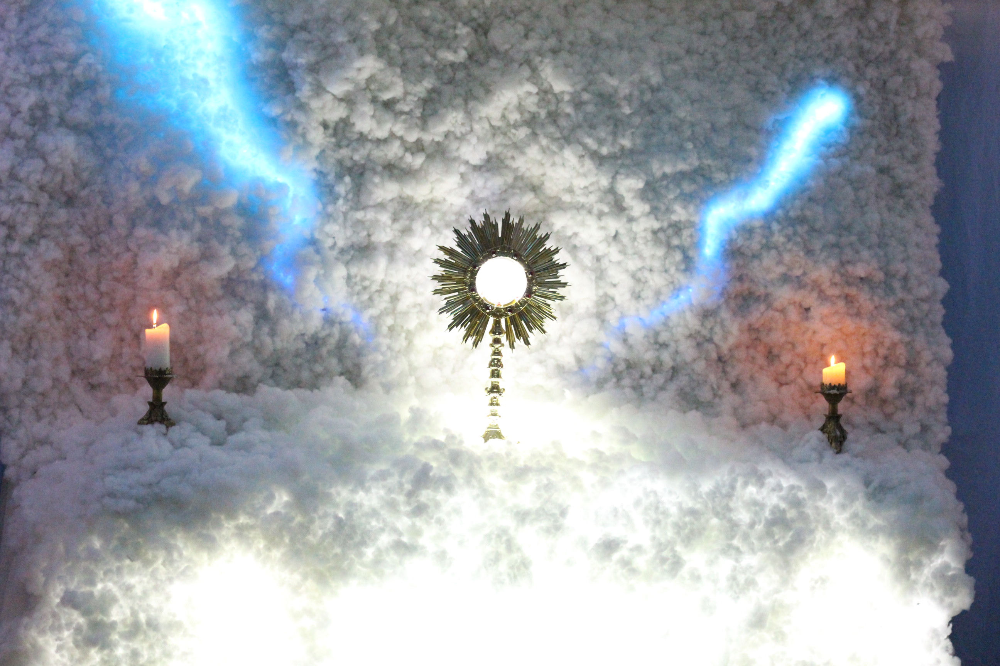
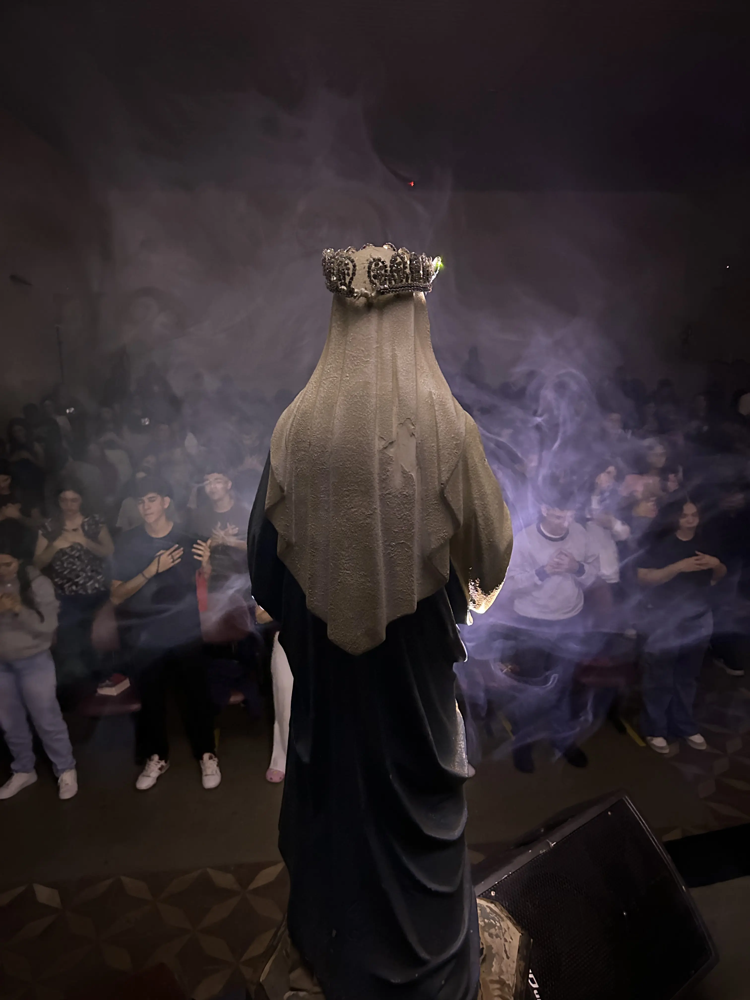
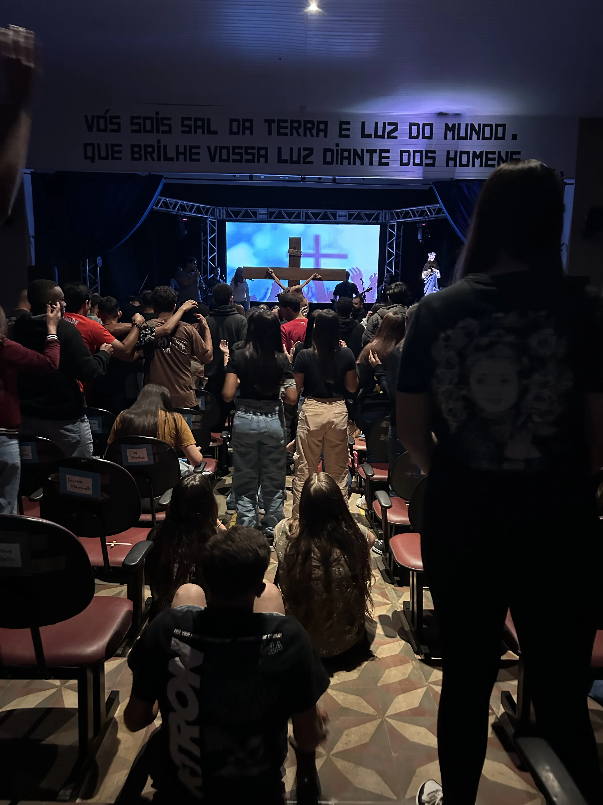
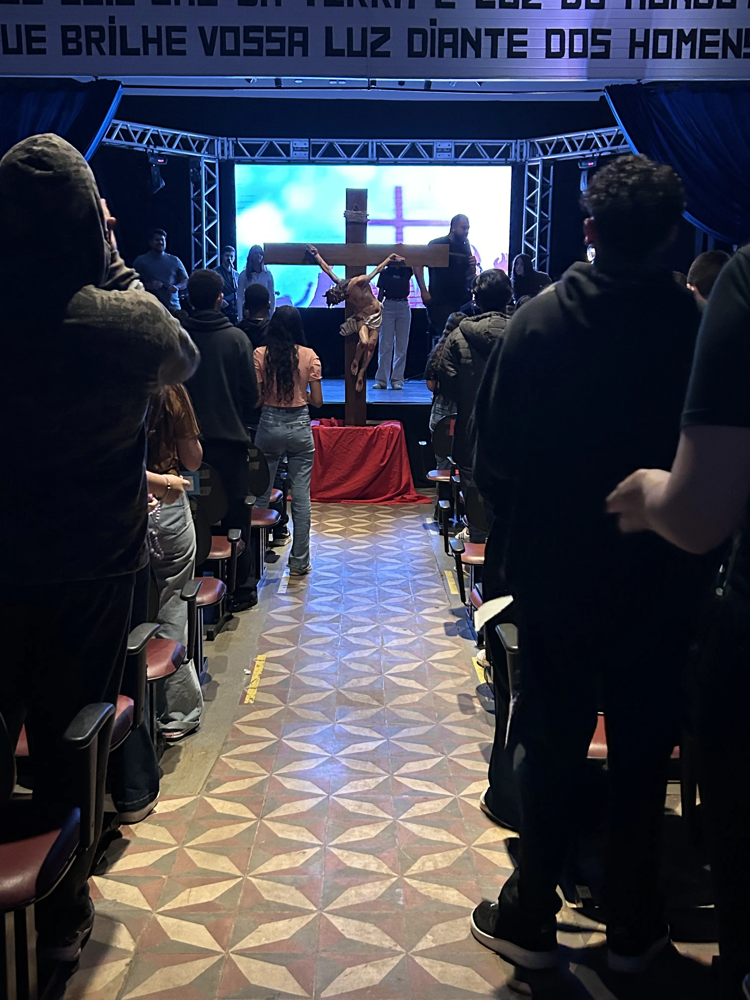
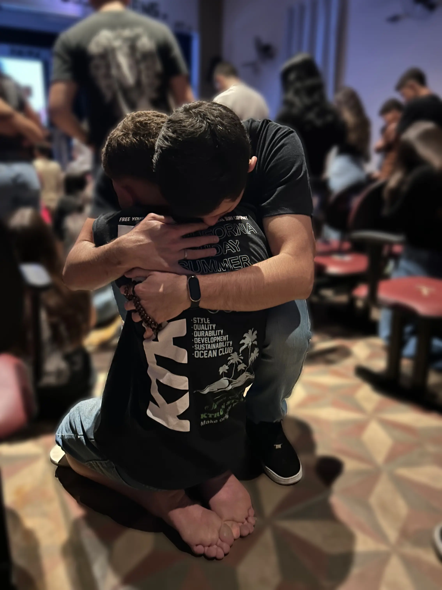
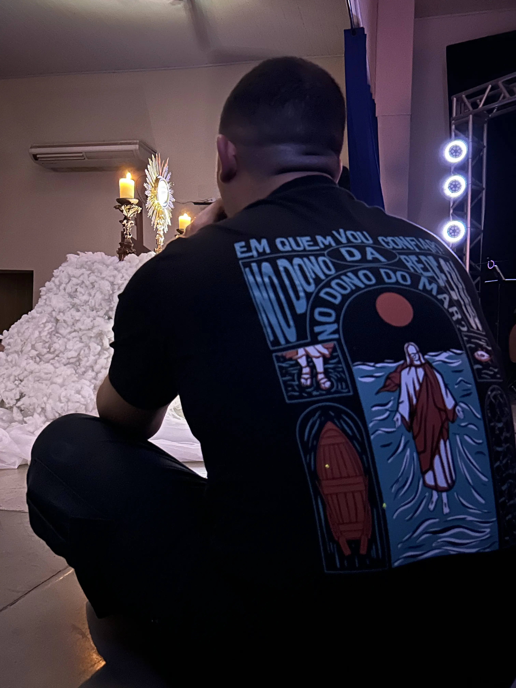

Contagem regressiva
Contagem regressiva para o início do encontro em 24 de julho de 2026.
00
Dias
00
Horas
00
Min
00
Seg
Sobre o encontro
Um retiro para viver algo novo
O Encontro de Jovens é um momento especial preparado para oferecer experiências de espiritualidade, convivência, música, reflexão e renovação interior.
Galeria
Memórias de encontros anteriores






Vídeo
Sinta um pouco da experiência...
e conheça um pouco da nossa história!
Localização
Onde vai acontecer
Av. João Batista Carreta, José Bonifácio - SP, 15200-000.
Inscrição
Garanta sua vaga no 19° Encontro JST
Prepare seu coração e venha viver dias de fé, comunhão e transformação. As inscrições podem ser feitas pelo formulário oficial.
Abrir formulário de inscrição